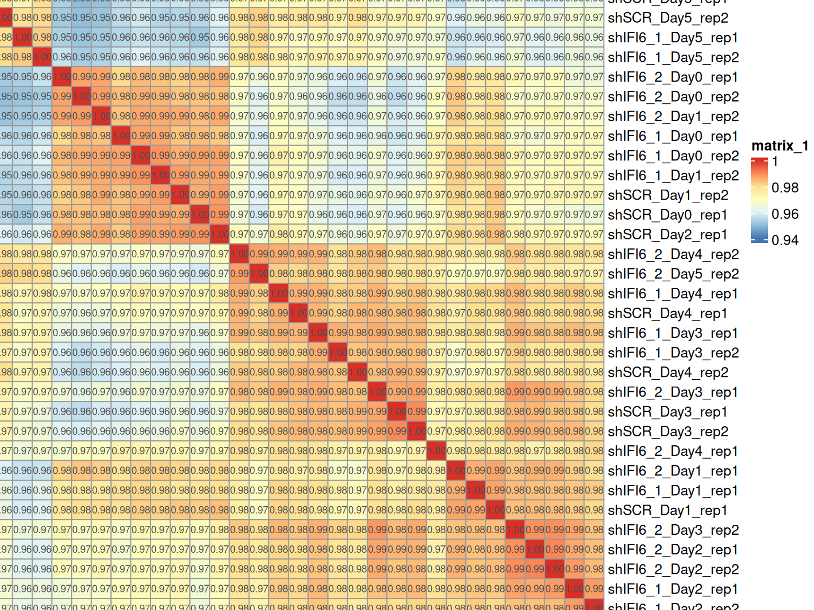
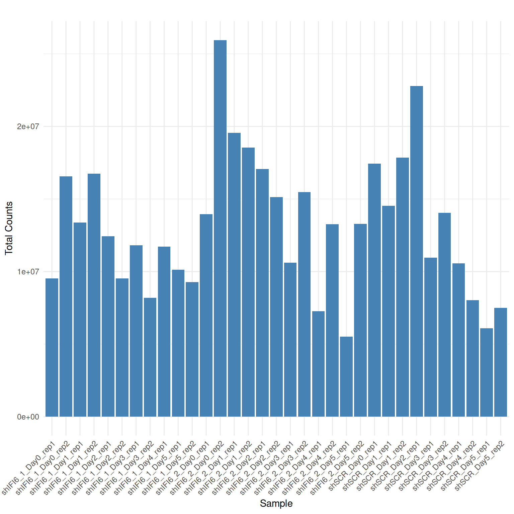
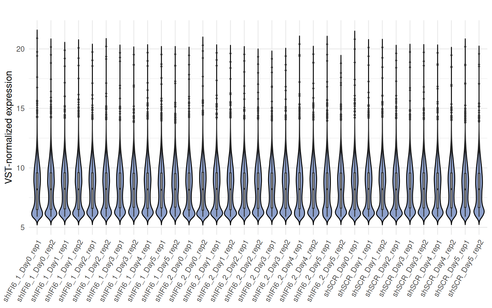
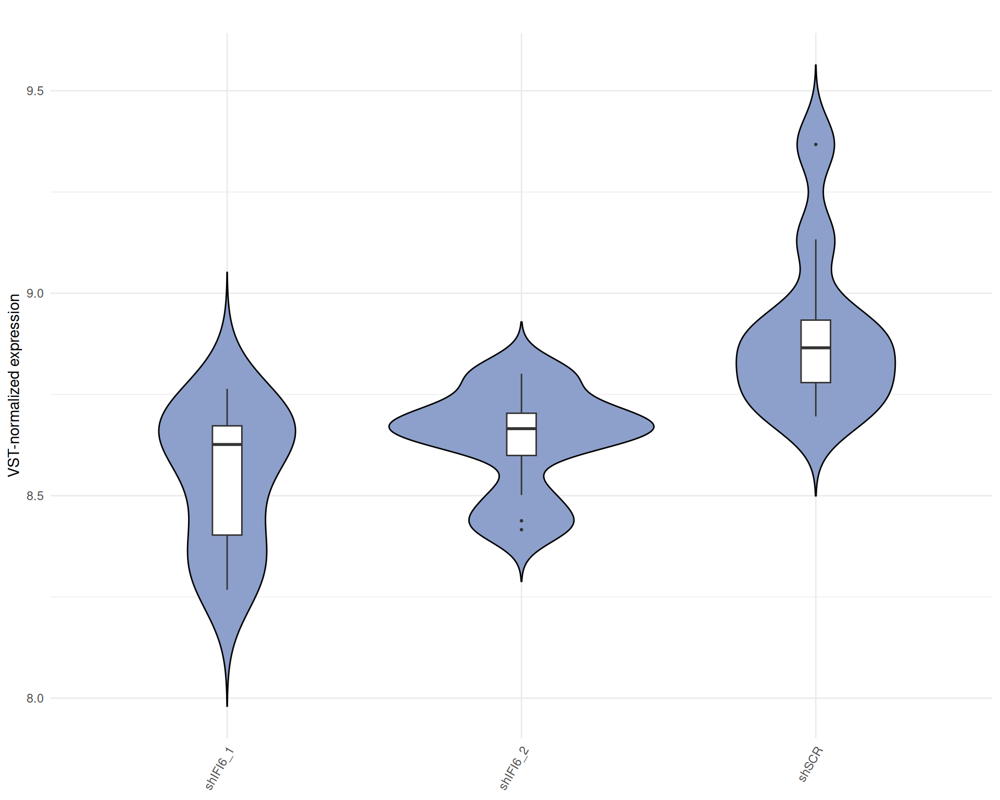
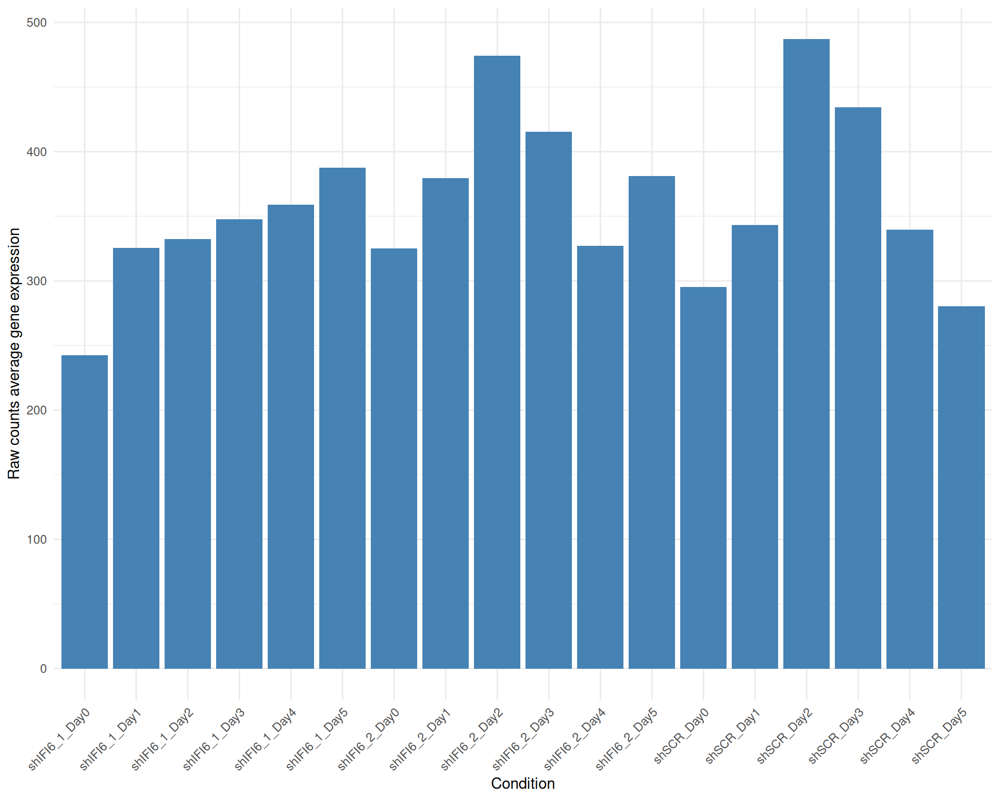
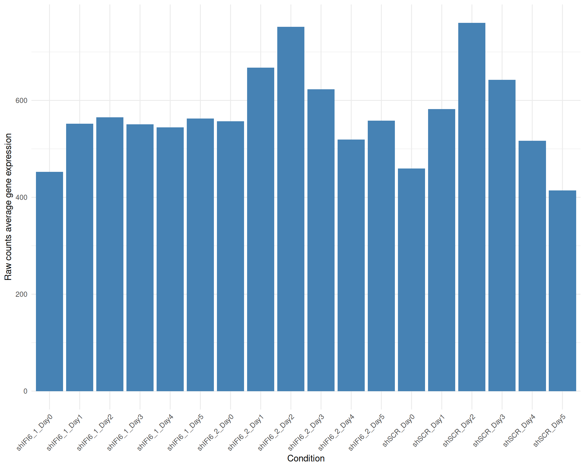
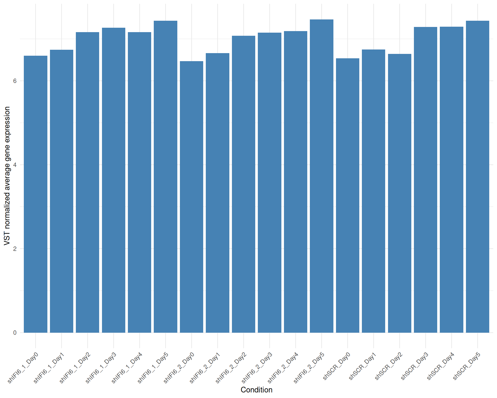
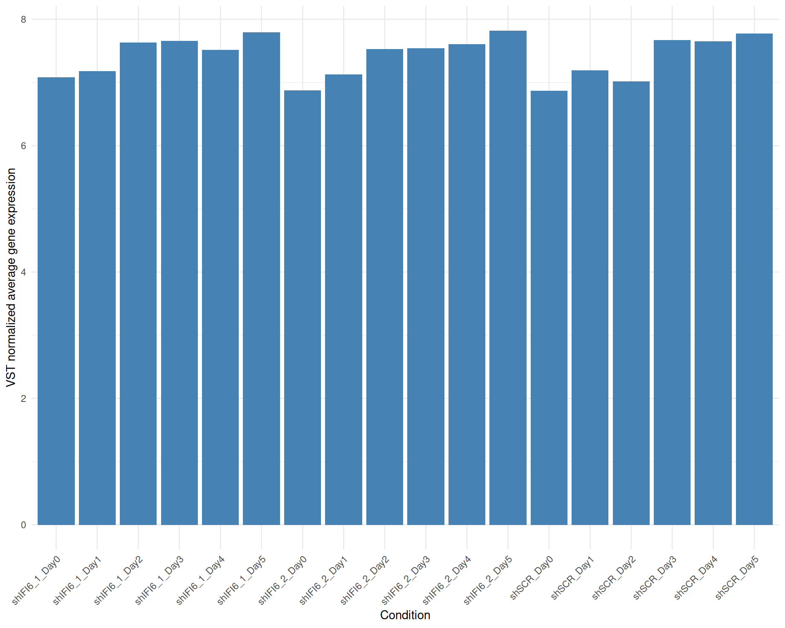

Last updated: 2025-09-26
Checks: 6 1
Knit directory: frascolla_chemoresistance/
This reproducible R Markdown analysis was created with workflowr (version 1.7.2). The Checks tab describes the reproducibility checks that were applied when the results were created. The Past versions tab lists the development history.
Great! Since the R Markdown file has been committed to the Git repository, you know the exact version of the code that produced these results.
Great job! The global environment was empty. Objects defined in the global environment can affect the analysis in your R Markdown file in unknown ways. For reproduciblity it’s best to always run the code in an empty environment.
The command set.seed(20250522) was run prior to running
the code in the R Markdown file. Setting a seed ensures that any results
that rely on randomness, e.g. subsampling or permutations, are
reproducible.
Great job! Recording the operating system, R version, and package versions is critical for reproducibility.
Nice! There were no cached chunks for this analysis, so you can be confident that you successfully produced the results during this run.
Using absolute paths to the files within your workflowr project makes it difficult for you and others to run your code on a different machine. Change the absolute path(s) below to the suggested relative path(s) to make your code more reproducible.
| absolute | relative |
|---|---|
| /hpcnfs/scratch/DIMA/gmariani/PROJECTS/rna/reports/projects/frascolla/frascolla_chemoresistance/data/UNIQUELIST_shIFI6_vs_shIFI6.csv | data/UNIQUELIST_shIFI6_vs_shIFI6.csv |
| /hpcnfs/scratch/DIMA/gmariani/PROJECTS/rna/reports/projects/frascolla/frascolla_chemoresistance/data/UNIQUELIST_shIFI6_vs_shSCR.csv | data/UNIQUELIST_shIFI6_vs_shSCR.csv |
Great! You are using Git for version control. Tracking code development and connecting the code version to the results is critical for reproducibility.
The results in this page were generated with repository version 96c88b4. See the Past versions tab to see a history of the changes made to the R Markdown and HTML files.
Note that you need to be careful to ensure that all relevant files for
the analysis have been committed to Git prior to generating the results
(you can use wflow_publish or
wflow_git_commit). workflowr only checks the R Markdown
file, but you know if there are other scripts or data files that it
depends on. Below is the status of the Git repository when the results
were generated:
Untracked files:
Untracked: .DS_Store
Untracked: analysis/_expression_barplot.Rmd
Untracked: data/RNAseq_analysis.xlsx
Untracked: data/RNAseq_analysis_gene_lists.xlsx
Untracked: data/UNIQUELIST_shIFI6_vs_shIFI6.csv
Untracked: data/UNIQUELIST_shIFI6_vs_shSCR.csv
Untracked: data/samples_info_sh1plus2_vs_scr.tsv
Untracked: data/shIFI6 Day 5 vs Day 0.csv
Untracked: data/shIFI6Day 3 vs shSCRDay 0.csv
Untracked: data/shIFI6Day 4 vs Day 0.csv
Untracked: data/shIFI6Day 4 vs shSCRDay 0.csv
Untracked: data/shIFI6Day 5 vs shSCRDay 0.csv
Untracked: data/shIFI6Day3 vs Day0.csv
Untracked: output/deg_shIFI6_Day0_vs_shSCR_Day0.tsv
Untracked: output/deg_shIFI6_Day1_vs_shSCR_Day0.tsv
Untracked: output/deg_shIFI6_Day2_vs_shSCR_Day0.tsv
Untracked: output/deg_shIFI6_Day3_vs_shSCR_Day0.tsv
Untracked: output/deg_shIFI6_Day4_vs_shSCR_Day0.tsv
Untracked: output/deg_shIFI6_Day5_vs_shSCR_Day0.tsv
Untracked: output/deg_shSCR_Day2_vs_shSCR_Day0.tsv
Untracked: output/deg_shSCR_Day3_vs_shSCR_Day0.tsv
Untracked: output/deg_shSCR_Day4_vs_shSCR_Day0.tsv
Untracked: src/a
Untracked: src/genes2filter_ensemblid.csv
Untracked: src/genes2filter_symbol.csv
Untracked: src/h.all.v2025.1.Hs.symbols.gmt
Unstaged changes:
Modified: analysis/02_de_ifi6_sh1_day4.Rmd
Modified: analysis/04_de_ifi6_day1_day0.Rmd
Modified: output/deg_shIFI6_1_Day1_vs_shSCR_Day1.tsv
Modified: output/deg_shIFI6_1_Day2_vs_shSCR_Day2.tsv
Modified: output/deg_shIFI6_1_Day3_vs_shSCR_Day3.tsv
Modified: output/deg_shIFI6_1_Day4_vs_shSCR_Day4.tsv
Modified: output/deg_shIFI6_1_Day5_vs_shSCR_Day5.tsv
Modified: output/deg_shIFI6_2_Day1_vs_shSCR_Day1.tsv
Modified: output/deg_shIFI6_2_Day2_vs_shSCR_Day2.tsv
Modified: output/deg_shIFI6_2_Day3_vs_shSCR_Day3.tsv
Modified: output/deg_shIFI6_2_Day4_vs_shSCR_Day4.tsv
Modified: output/deg_shIFI6_2_Day5_vs_shSCR_Day5.tsv
Modified: output/deg_shIFI6_Day1_vs_shIFI6_Day0.tsv
Modified: output/deg_shIFI6_Day1_vs_shSCR_Day1.tsv
Modified: output/deg_shIFI6_Day2_vs_shIFI6_Day0.tsv
Modified: output/deg_shIFI6_Day2_vs_shSCR_Day2.tsv
Modified: output/deg_shIFI6_Day3_vs_shIFI6_Day0.tsv
Modified: output/deg_shIFI6_Day3_vs_shSCR_Day3.tsv
Modified: output/deg_shIFI6_Day4_vs_shIFI6_Day0.tsv
Modified: output/deg_shIFI6_Day4_vs_shSCR_Day4.tsv
Modified: output/deg_shIFI6_Day5_vs_shIFI6_Day0.tsv
Modified: output/deg_shIFI6_Day5_vs_shSCR_Day5.tsv
Modified: output/deg_shSCR_Day5_vs_shSCR_Day0.tsv
Modified: src/__utils_rna_seq_functions.R
Note that any generated files, e.g. HTML, png, CSS, etc., are not included in this status report because it is ok for generated content to have uncommitted changes.
These are the previous versions of the repository in which changes were
made to the R Markdown (analysis/01_baseline_analysis.Rmd)
and HTML (docs/01_baseline_analysis.html) files. If you’ve
configured a remote Git repository (see ?wflow_git_remote),
click on the hyperlinks in the table below to view the files as they
were in that past version.
| File | Version | Author | Date | Message |
|---|---|---|---|---|
| Rmd | 96c88b4 | Mariani_Gianluca_Alessio | 2025-09-26 | Added 4 average selected gene expression barplots |
| html | 11f3d4d | Mariani_Gianluca_Alessio | 2025-07-16 | Build site. |
| html | 401e86f | Mariani_Gianluca_Alessio | 2025-07-15 | Build site. |
| Rmd | 57ef6f7 | Mariani_Gianluca_Alessio | 2025-07-15 | Redone analysis with ribosomal genes filter |
| html | a3e3ed2 | Yinxiu Zhan | 2025-07-10 | Build site. |
| Rmd | 13204d7 | Yinxiu Zhan | 2025-07-10 | Fix linking |
| html | 3cabe3c | Yinxiu Zhan | 2025-07-10 | Build site. |
| Rmd | 1e3bcd0 | Yinxiu Zhan | 2025-07-10 | Fix linking |
| Rmd | c0a0612 | Yinxiu Zhan | 2025-07-09 | :sparkles: Release first version |
knitr::opts_chunk$set(echo = FALSE,
message = FALSE,
warning = FALSE,
cache = FALSE,
autodep = TRUE,
fig.align = 'center',
fig.width = 10,
fig.height = 8)FRASCOLLA AGGIUNGI
The steps from 1 to 4 have been performed using nf-core/rnaseq v3.18.0. This report includes analysis from step 5 and 6
Below we present the table containing all the samples analyzed in this report.
Each sample is described by:
sample: sample name defined a priori in the previous step of RNA seq analysis
sample_description: a descriptive version of the sample name to improve clarity in the presentation of data
batch: the experimental batch of each sample
condition: the treatment condition (control, knockdown, treated, etc…)
condition_description: a descriptive version of the condition to improve clarity in the presentation of data
time: day after treatment
The comparisons included in the report are listed below. Each comparison group includes two subsets of samples: a ‘treatment’ group and a control group. Differential gene expression analysis is conducted by comparing the ‘treatment’ samples to the control samples within each group.
➤ Group: group_1_set_0, (shIFI6_1_Day1, shIFI6_1_Day2,
shIFI6_1_Day3, shIFI6_1_Day4, shIFI6_1_Day5 vs
shIFI6_1_Day0)
- ‘Treated’ samples
(shIFI6_1_Day1, shIFI6_1_Day2, shIFI6_1_Day3, shIFI6_1_Day4,
shIFI6_1_Day5,
e):
shIFI6_1_Day1_rep1
shIFI6_1_Day1_rep2
shIFI6_1_Day2_rep1
shIFI6_1_Day2_rep2
shIFI6_1_Day3_rep1
shIFI6_1_Day3_rep2
shIFI6_1_Day4_rep1
shIFI6_1_Day5_rep1
shIFI6_1_Day5_rep2
-
Control Samples (shIFI6_1_Day0,
c/tc):
shIFI6_1_Day0_rep1
shIFI6_1_Day0_rep2
➤
Group: group_2_set_0, (shIFI6_2_Day1, shIFI6_2_Day2, shIFI6_2_Day3,
shIFI6_2_Day4, shIFI6_2_Day5 vs shIFI6_2_Day0)
-
‘Treated’ samples (shIFI6_2_Day1, shIFI6_2_Day2,
shIFI6_2_Day3, shIFI6_2_Day4, shIFI6_2_Day5,
e):
shIFI6_2_Day1_rep1
shIFI6_2_Day1_rep2
shIFI6_2_Day2_rep1
shIFI6_2_Day2_rep2
shIFI6_2_Day3_rep1
shIFI6_2_Day3_rep2
shIFI6_2_Day4_rep1
shIFI6_2_Day4_rep2
shIFI6_2_Day5_rep1
shIFI6_2_Day5_rep2
-
Control Samples (shIFI6_2_Day0,
c/tc):
shIFI6_2_Day0_rep1
shIFI6_2_Day0_rep2
➤
Group: group_3_set_0, (shSCR_Day1, shSCR_Day2, shSCR_Day3, shSCR_Day4,
shSCR_Day5 vs shSCR_Day0)
- ‘Treated’
samples (shSCR_Day1, shSCR_Day2, shSCR_Day3, shSCR_Day4,
shSCR_Day5,
e):
shSCR_Day1_rep1
shSCR_Day1_rep2
shSCR_Day2_rep1
shSCR_Day3_rep1
shSCR_Day3_rep2
shSCR_Day4_rep1
shSCR_Day4_rep2
shSCR_Day5_rep1
shSCR_Day5_rep2
-
Control Samples (shSCR_Day0,
c/tc):
shSCR_Day0_rep1
For the PCA (principal component analysis) and correlation analyses, gene expression data were normalized using the variance stabilizing transformation (VST) method implemented in DESeq2.
Below, we present the PCA performed on the complete set of samples. PCA was used to explore global variance in gene expression profiles across all samples.
The primary objectives of this analysis are to:
Assess sample quality
Determine whether samples cluster according to experimental conditions, suggesting biologically meaningful variation
Identify potential outliers
Detect batch effects or other sources of unwanted variation
By reducing the high-dimensional gene expression data into a few principal components, PCA provides a visual summary of the dataset’s structure.
Un bordello
The Spearman correlation heatmap provides a global view of the similarity between gene expression profiles across all samples. We calculated the pairwise Spearman correlation coefficients between samples and visualized them in a heatmap. Rows and columns are hierarchically clustered based on these correlations to reveal patterns of similarity and potential groupings among samples.
Between replicates of the same condition:
A very good quality signal
Indicates that replicates behave consistently
Suggests well-defined and reproducible biological conditions
Between different conditions:
May indicate minor transcriptional differences
Or poor separation due to contamination or mislabeling
Between replicates of the same condition:
May suggest technical or biological issues:
Library prep/sequencing errors
Sample mix-up or mislabeling
Biological heterogeneity
In some cases, biological replicates may exhibit a certain degree of variability that cannot be entirely avoided. This is particularly true when samples are obtained from different individuals, such as patient-derived samples, even when all other experimental conditions are carefully controlled.
Therefore, lower correlation values between replicates should not be interpreted in a standardized way, but rather evaluated in the specific biological and experimental context of the study.
Between different conditions:
Expected when conditions are biologically distinct
If correlations are too similar to replicates, it may suggest:
Weak treatment effects
Few genes affected by the condition
Below we present the heatmap associated spearman correlation.

ongoing
A bar plot displaying total read counts per sample is shown below

Variable but not extremely variable
Below we present a violin plot of the VST-normalized read counts by sample.
A violin plot of VST-normalized counts provides an overview of the global distribution of gene expression values across samples after normalization. This plot allows for the detection of potential outliers, technical biases, or inconsistencies in distribution across samples, which could affect downstream analyses. A consistent distribution of VST counts across samples suggests successful normalization and comparable expression profiles.

The violin plot of counts data displays a consistent distribution of
VST counts across samples.
This indicates no substantial differences in gene expression profiles
between the conditions and confirms the quality and reliability of the
samples, supporting the inclusion of all samples in subsequent
analyses.
Below we present the distribution of IFI6 normalised expression across conditions

Below we present the distributions of the selected genes expression across conditions in a barplot where the height of each bar represents the average expression of all the selected genes in that particular condition. Each condition includes all the available replicates except those already filtered.




The report with specific comparisons can be found here:
R version 4.5.0 (2025-04-11)
Platform: x86_64-pc-linux-gnu
Running under: Ubuntu 24.04.2 LTS
Matrix products: default
BLAS: /usr/lib/x86_64-linux-gnu/openblas-pthread/libblas.so.3
LAPACK: /usr/lib/x86_64-linux-gnu/openblas-pthread/libopenblasp-r0.3.26.so; LAPACK version 3.12.0
locale:
[1] LC_CTYPE=en_US.UTF-8 LC_NUMERIC=C
[3] LC_TIME=en_US.UTF-8 LC_COLLATE=en_US.UTF-8
[5] LC_MONETARY=en_US.UTF-8 LC_MESSAGES=en_US.UTF-8
[7] LC_PAPER=en_US.UTF-8 LC_NAME=C
[9] LC_ADDRESS=C LC_TELEPHONE=C
[11] LC_MEASUREMENT=en_US.UTF-8 LC_IDENTIFICATION=C
time zone: Etc/UTC
tzcode source: system (glibc)
attached base packages:
[1] stats4 grid stats graphics grDevices utils datasets
[8] methods base
other attached packages:
[1] ReactomePA_1.53.0 tibble_3.3.0
[3] limma_3.64.3 gridExtra_2.3
[5] WGCNA_1.73 fastcluster_1.3.0
[7] dynamicTreeCut_1.63-1 dplyr_1.1.4
[9] clusterProfiler_4.16.0 reshape_0.8.10
[11] gplots_3.2.0 RColorBrewer_1.1-3
[13] rtracklayer_1.68.0 DESeq2_1.48.2
[15] SummarizedExperiment_1.38.1 Biobase_2.68.0
[17] MatrixGenerics_1.20.0 matrixStats_1.5.0
[19] GenomicRanges_1.60.0 GenomeInfoDb_1.44.3
[21] IRanges_2.42.0 S4Vectors_0.46.0
[23] BiocGenerics_0.54.0 generics_0.1.4
[25] reshape2_1.4.4 git2r_0.36.2
[27] DT_0.34.0 ComplexHeatmap_2.24.1
[29] plotly_4.11.0 ggplot2_4.0.0
loaded via a namespace (and not attached):
[1] splines_4.5.0 later_1.4.4 BiocIO_1.18.0
[4] bitops_1.0-9 ggplotify_0.1.3 R.oo_1.27.1
[7] polyclip_1.10-7 preprocessCore_1.70.0 graph_1.87.0
[10] rpart_4.1.24 XML_3.99-0.19 lifecycle_1.0.4
[13] doParallel_1.0.17 rprojroot_2.1.1 MASS_7.3-65
[16] lattice_0.22-7 crosstalk_1.2.2 backports_1.5.0
[19] magrittr_2.0.4 Hmisc_5.2-3 sass_0.4.10
[22] rmarkdown_2.29 jquerylib_0.1.4 yaml_2.3.10
[25] httpuv_1.6.16 ggtangle_0.0.7 cowplot_1.2.0
[28] DBI_1.2.3 abind_1.4-8 purrr_1.1.0
[31] R.utils_2.13.0 ggraph_2.2.2 RCurl_1.98-1.17
[34] yulab.utils_0.2.1 nnet_7.3-20 tweenr_2.0.3
[37] rappdirs_0.3.3 circlize_0.4.16 GenomeInfoDbData_1.2.14
[40] enrichplot_1.28.4 ggrepel_0.9.6 tidytree_0.4.6
[43] reactome.db_1.92.0 codetools_0.2-20 DelayedArray_0.34.1
[46] ggforce_0.5.0 DOSE_4.2.0 tidyselect_1.2.1
[49] shape_1.4.6.1 aplot_0.2.9 UCSC.utils_1.4.0
[52] farver_2.1.2 viridis_0.6.5 base64enc_0.1-3
[55] GenomicAlignments_1.44.0 jsonlite_2.0.0 GetoptLong_1.0.5
[58] tidygraph_1.3.1 Formula_1.2-5 survival_3.8-3
[61] iterators_1.0.14 foreach_1.5.2 tools_4.5.0
[64] treeio_1.32.0 Rcpp_1.1.0 glue_1.8.0
[67] SparseArray_1.8.1 xfun_0.53 qvalue_2.40.0
[70] withr_3.0.2 fastmap_1.2.0 caTools_1.18.3
[73] digest_0.6.37 R6_2.6.1 gridGraphics_0.5-1
[76] colorspace_2.1-2 Cairo_1.6-5 GO.db_3.21.0
[79] gtools_3.9.5 dichromat_2.0-0.1 RSQLite_2.4.3
[82] R.methodsS3_1.8.2 tidyr_1.3.1 data.table_1.17.8
[85] graphlayouts_1.2.2 httr_1.4.7 htmlwidgets_1.6.4
[88] S4Arrays_1.8.1 graphite_1.55.0 whisker_0.4.1
[91] pkgconfig_2.0.3 gtable_0.3.6 blob_1.2.4
[94] impute_1.82.0 workflowr_1.7.2 S7_0.2.0
[97] XVector_0.48.0 htmltools_0.5.8.1 fgsea_1.34.2
[100] clue_0.3-66 scales_1.4.0 png_0.1-8
[103] ggfun_0.2.0 knitr_1.50 rstudioapi_0.17.1
[106] rjson_0.2.23 checkmate_2.3.3 nlme_3.1-168
[109] curl_7.0.0 cachem_1.1.0 GlobalOptions_0.1.2
[112] stringr_1.5.2 KernSmooth_2.23-26 parallel_4.5.0
[115] foreign_0.8-90 AnnotationDbi_1.70.0 restfulr_0.0.16
[118] pillar_1.11.1 vctrs_0.6.5 promises_1.3.3
[121] cluster_2.1.8.1 htmlTable_2.4.3 evaluate_1.0.5
[124] magick_2.9.0 cli_3.6.5 locfit_1.5-9.12
[127] compiler_4.5.0 Rsamtools_2.24.1 rlang_1.1.6
[130] crayon_1.5.3 labeling_0.4.3 plyr_1.8.9
[133] fs_1.6.6 stringi_1.8.7 viridisLite_0.4.2
[136] BiocParallel_1.42.2 Biostrings_2.76.0 lazyeval_0.2.2
[139] GOSemSim_2.34.0 Matrix_1.7-4 patchwork_1.3.2
[142] bit64_4.6.0-1 statmod_1.5.0 KEGGREST_1.48.1
[145] igraph_2.1.4 memoise_2.0.1 bslib_0.9.0
[148] ggtree_3.16.3 fastmatch_1.1-6 bit_4.6.0
[151] ape_5.8-1 gson_0.1.0